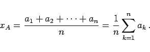
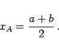
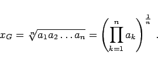
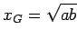
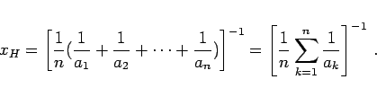
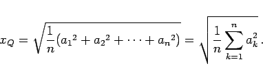
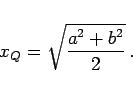
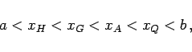
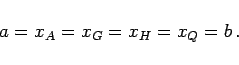

Mittelwerte zweidimensionaler Zufallsgrößen und gewichtete Mittelwerte werden hier nicht betrachtet.
|  | (1.68a) |
Für zwei Größen a und b ergibt sich:
|  | (1.68b) |
Die Größen a, xA und b bilden eine arithmetische Folge.
|  | (1.69a) |
Für zwei Größen a und b ergibt sich
Die Größen a, xG und b bilden eine geometrische Folge. Wenn a und b gegebene Strecken sind, dann kann eine Strecke der Länge  mit Hilfe einer der in den folgenden zwei Abbildungen angegebenen Konstruktionen ermittelt werden.
Einen speziellen Fall des geometrischen Mittels stellt die Teilung einer Strecke im Verhältnis des Goldenen Schnittes dar.
|  | (1.70a) |
Für zwei Größen a und b ergibt sich
|  | (1.71a) |
Für zwei Größen a und b ergibt sich
|  | (1.71b) |
Das quadratische Mittel ist von Bedeutung für die Theorie der Beobachtungsfehler.
|  | (1.72a) |
|  | (1.72b) |